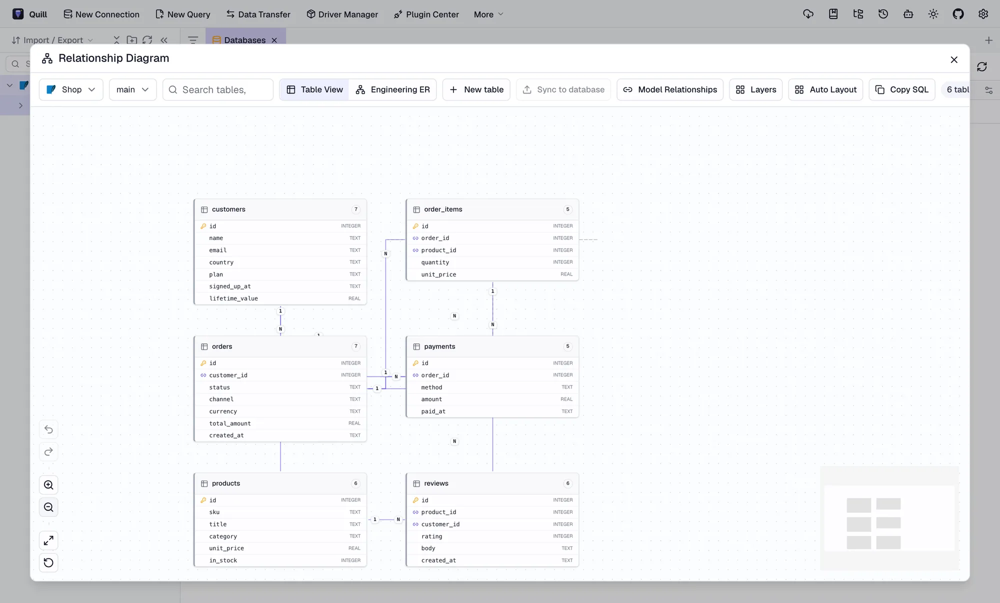

1Install Quill
Download the installer for your computer from the download section and open it.
- macOS: open the
.dmgand drag Quill to Applications. If macOS says the app can’t be checked, right-click Quill and choose Open the first time. - Windows: run the
-setup.exe. If SmartScreen appears, choose More info and then Run anyway. - Linux: use the
.AppImage(make it executable withchmod +x), or install the.debor.rpm.
2Start MySQL
Already have a MySQL server you can use? Skip ahead to step 3. Otherwise, the quickest way is Docker. This starts MySQL 8.4 with an empty database called shop:
docker run --name quill-mysql \
-e MYSQL_ROOT_PASSWORD=quill \
-e MYSQL_DATABASE=shop \
-p 3306:3306 -d mysql:8.4Give it about 15 seconds to start. If Docker says port 3306 is already in use, another MySQL is running on your computer: replace -p 3306:3306 with -p 3307:3306 and use port 3307 in the steps below.
3Load the sample data
The sample is a small online shop: 60 customers, 10 products, 400 orders with their line items, payments and reviews. Tables and columns have comments, which helps the AI understand them.
Load it into the container from the folder where you saved it:
docker exec -i quill-mysql mysql -uroot -pquill shop < shop-mysql.sqlUsing your own MySQL server instead? Create the database first, then load the file:
mysql -h 127.0.0.1 -u root -p -e "CREATE DATABASE shop"
mysql -h 127.0.0.1 -u root -p shop < shop-mysql.sql4Connect Quill
- Click New Connection in the toolbar and choose MySQL.
- Fill in the fields:
Name Shop (MySQL) Host 127.0.0.1Port 3306(or3307if you changed it)Username rootPassword quillDatabase shop - Click Test. When it succeeds, click Save.
For a server on another machine, use its address as the host. If it’s only reachable over SSH, add an SSH tunnel in the same dialog.
5Look around
Double-click Shop (MySQL) in the sidebar, then expand shop and Tables.
- Double-click
ordersto browse rows. Filter with WHERE, sort with ORDER BY. - Click New Query to write SQL yourself. Run it with ⌘ Enter on macOS or Ctrl Enter on Windows and Linux, then switch the result to Chart.
- Right-click the
shopdatabase, open Structure tools and choose View Diagram to see how the tables connect.

6Choose an AI model
Open Settings (the gear in the top-right corner), go to AI and click Add Config. Pick a Provider, give the config a name, and fill in Endpoint, API Key and Default Model. Then click Save.
Pick whichever suits you. Each one below is complete on its own.
Claude (Anthropic)
Strong at reading schemas and writing correct SQL. Create a key at console.anthropic.com.
| Provider | Claude |
|---|---|
| Endpoint | Keep the default, https://api.anthropic.com/v1/messages |
| API Key | Your Anthropic key (starts with sk-ant-) |
| Default Model | claude-sonnet-5-5, or choose from the list |
OpenAI
Create a key at platform.openai.com/api-keys.
| Provider | OpenAI |
|---|---|
| Endpoint | Keep the default, https://api.openai.com/v1/chat/completions |
| API Key | Your OpenAI key (starts with sk-) |
| Default Model | Choose from the list Quill loads with your key |
OpenRouter
One key for models from many companies. Create a key at openrouter.ai/keys and find model IDs at openrouter.ai/models.
| Provider | OpenAI Compatible |
|---|---|
| Endpoint | https://openrouter.ai/api/v1 |
| API Key | Your OpenRouter key (starts with sk-or-) |
| Default Model | A model ID from OpenRouter, written as company/model |
Pick a model that supports tool calling. Quill’s agent uses tools to read the schema and run queries.
LiteLLM
LiteLLM is a proxy that puts many providers behind one OpenAI-style API. Use it to route between models, track spend, or keep keys on a server. Install it and write a small config:
pip install 'litellm[proxy]'# litellm.yaml
model_list:
- model_name: claude
litellm_params:
model: anthropic/claude-sonnet-5-5
api_key: os.environ/ANTHROPIC_API_KEY
- model_name: local
litellm_params:
model: ollama/llama3.1
general_settings:
master_key: sk-quill-localexport ANTHROPIC_API_KEY=sk-ant-...
litellm --config litellm.yamlThe proxy listens on port 4000. In Quill:
| Provider | OpenAI Compatible |
|---|---|
| Endpoint | http://localhost:4000 |
| API Key | The master_key from your config, here sk-quill-local |
| Default Model | A model_name from your config, such as claude |
Ollama, fully local
Runs the model on your own computer, so neither your questions nor your schema leave it. Install Ollama, then download a model that supports tools:
ollama pull llama3.1qwen2.5-coder:7b is another good choice for SQL. Larger models give better answers if your computer can run them.
| Provider | Ollama |
|---|---|
| Endpoint | Keep the default, http://localhost:11434/v1 |
| API Key | Leave empty |
| Default Model | llama3.1, or the model you pulled |
Quill also has presets for Gemini, DeepSeek, Qwen and others. Any service with an OpenAI-style or Anthropic-style API works through OpenAI Compatible or Anthropic Compatible.
7Ask your first question
- Select Shop (MySQL) in the sidebar, then open the AI assistant with the robot icon in the toolbar.
- Switch the assistant to Agent mode. In Agent mode it can look at the schema and run read-only queries. In Ask mode it only writes SQL for you to run.
- Type a question:
Which products made the most money this year?
Here’s what happens behind the scenes:
- Quill searches the schema for tables that match your question and follows the foreign keys between them, here
products,order_itemsandorders. - The model writes MySQL that joins those tables and runs it read-only.
- You get the answer in plain words, with the SQL it ran so you can check it.
Then try a few more:
- How many orders did we get each month, and what share was refunded?
- Who are our top 5 customers by lifetime value, and which country are they in?
- What’s the average rating for each product category?
- Which payment method is most popular for orders over $500?
- Which products are almost out of stock but still selling well?
8Get better answers
- Say what you mean by a word. “Revenue from paid orders only” beats “revenue”.
- Give a time range. “In the last 90 days” or “in 2026” avoids guessing.
- Ask follow-ups. “Now split that by channel” keeps the context of the last answer.
- Name a table when you know it. Type
@ordersto point the assistant straight at it. - Describe your columns. Comments in the database help, and so do Quill’s schema notes. They are read alongside the schema.
- Ask about SQL too. Paste a query and ask Quill to explain it, speed it up, or convert it to another dialect.
9Keep your data safe
The agent runs read-only queries on its own. If a request would change data, it shows you the exact statement and waits for you to approve it.
For real databases, give Quill a user that can only read:
CREATE USER 'quill_ai'@'%' IDENTIFIED BY 'choose-a-strong-password';
GRANT SELECT ON shop.* TO 'quill_ai'@'%';You can also mark a connection as production or read-only in its settings. Only the tables a question needs are sent to your AI provider, and with Ollama nothing leaves your computer.
10Troubleshooting
- Docker says port 3306 is already in use
- Another MySQL is running. Start the container with
-p 3307:3306and use port 3307 in Quill. - Test fails with “Access denied”
- Check the username and password. With the Docker command above they are
rootandquill. - The assistant says AI isn’t configured
- Add a config under Settings, then AI, and make sure it’s selected in the assistant.
- The AI returns 401 or “invalid API key”
- Copy the key again with no spaces. For LiteLLM, use the
master_key, not your Anthropic or OpenAI key. - The model is “not found”
- Use the exact model ID: from the list in Quill, from OpenRouter’s model page, or a
model_namefrom your LiteLLM config. - Ollama doesn’t answer
- Make sure Ollama is running (
ollama serve) and the model is downloaded (ollama list). - The answer has SQL but no data
- Switch the assistant to Agent mode, and use a model that supports tool calling.
You’re set
Connect your own databases the same way. Quill works with nearly 90 of them, from PostgreSQL and SQL Server to ClickHouse, MongoDB and Snowflake.